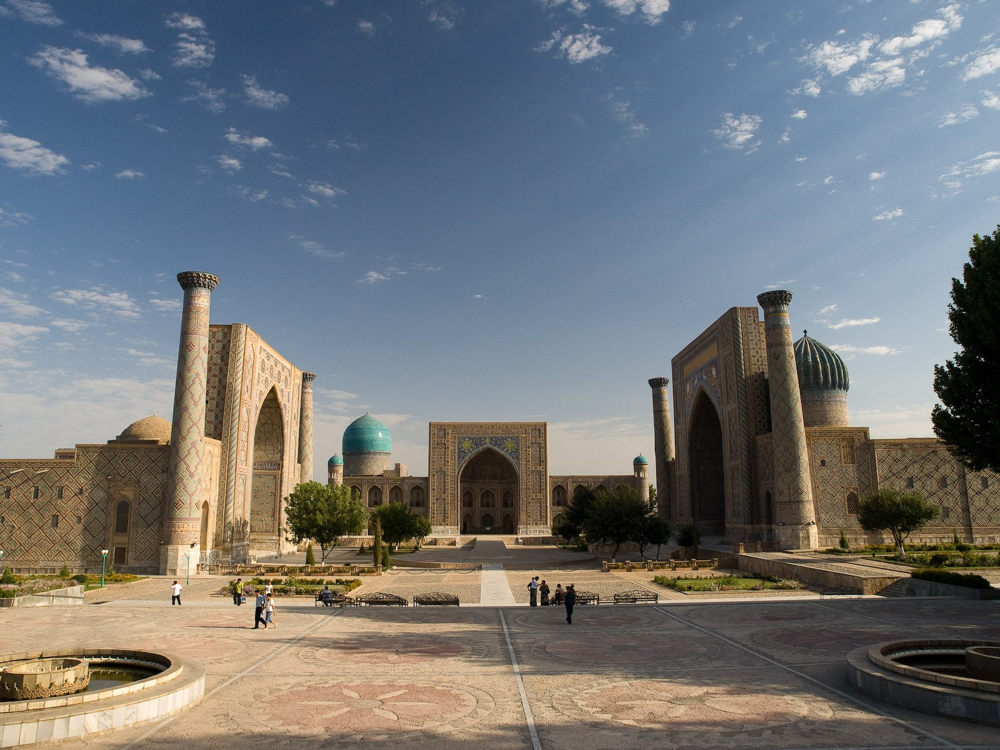

U.S. Secretary of State Marco Rubio to visit Samarkand with 200+ companies
Marco Rubio will take part in a C5+1 ministerial meeting with the foreign ministers of the five Central Asian states in Samarkand on 17–22 October 2026. According to the U.S. State Department, more than 200 business representatives will join the delegation.

U.S. Secretary of State Marco Rubio will visit the city of Samarkand in Uzbekistan on 17–22 October 2026. There he will take part in a C5+1 ministerial meeting with the foreign ministers of the five Central Asian states.
Details of the visit
According to a statement by the U.S. State Department, the visit is the first leg of a multi-stop trip for Rubio, followed by Mumbai and Jamnagar in India. During the Samarkand meeting the Secretary of State will also hold bilateral talks with officials of the five states.
More than 200 business representatives
Rubio will be accompanied by more than 200 U.S. business representatives. When the visit was first announced on 25 September, more than 100 American companies were said to be taking part; the official figure was updated to more than 200 business leaders on 14 October. This strengthens the economic and commercial dimension of the visit.

What C5+1 is
C5+1 is a dialogue platform between the United States and the five Central Asian states — Uzbekistan, Kazakhstan, Kyrgyzstan, Tajikistan and Turkmenistan. It is used to discuss regional economic connectivity, energy security and trade.
Washington's aim
The U.S. State Department statement said that “strategic cooperation through this diplomatic platform promotes a more peaceful and prosperous future for the United States and the countries of Central Asia.” Washington says it is seeking to deepen strategic and commercial ties with the region.